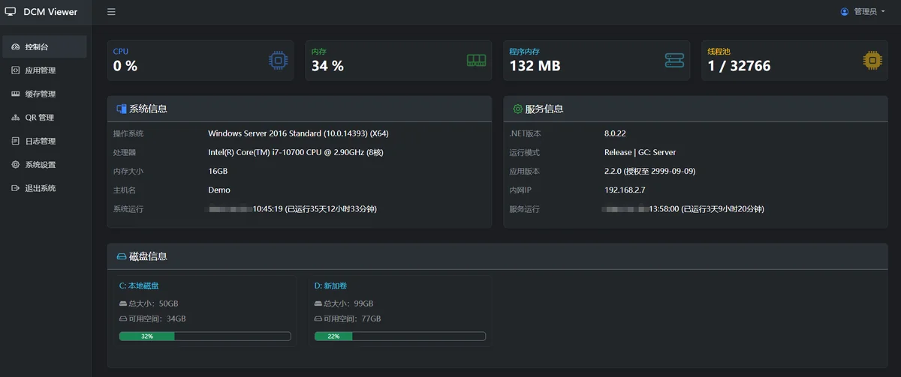
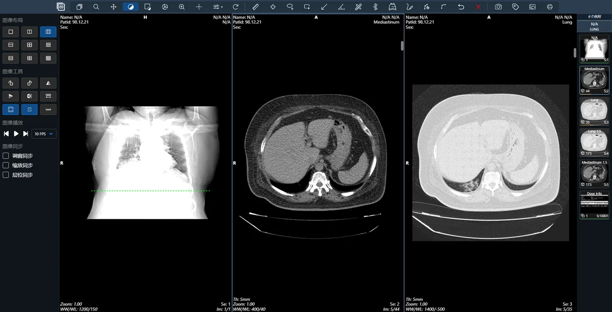
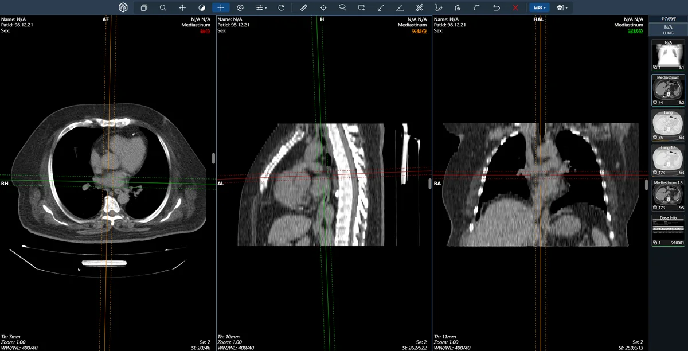
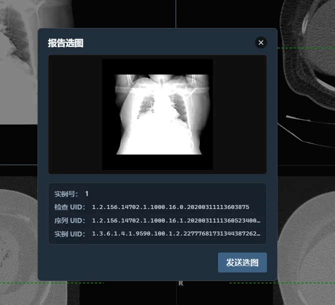
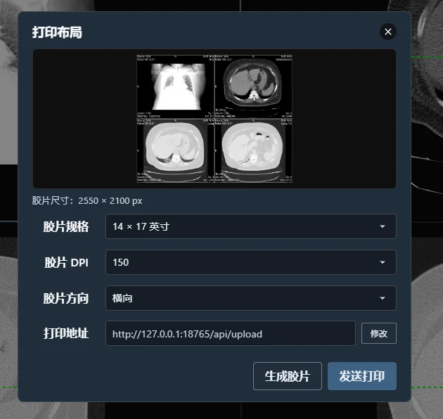
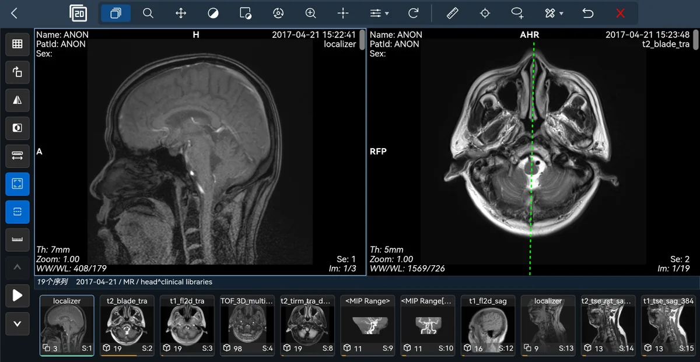
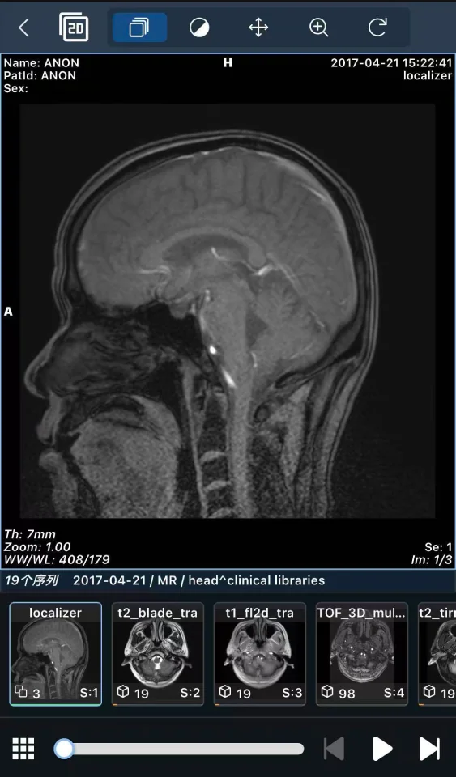

产品概览
DCMViewer 面向医疗机构提供完整的 DICOM 医学影像浏览器解决方案：以 Web 专业阅片为核心，配套影像服务完成数据接入、缓存与安全访问，帮助医院实现稳定、高效、跨终端的影像调阅。
系统支持从 RIS、电子病历等业务系统一键打开检查，电脑、平板、手机及大屏终端可按场景自适配展示。
核心特性
- 遵循 DICOM 3.0 国际标准，保障互联互通与数据兼容
- 浏览器阅片，无需安装客户端，支持多终端访问
- 支持 Windows / Linux 及信创环境部署
- 提供 2D、MPR 专业诊断能力与多分窗协同阅片
- 支持报告选图回传、胶片拼版打印与业务系统集成
- 支持多数据源接入、缓存优化、签名鉴权与 Docker 私有化部署
主要功能介绍
布局与阅片
- 支持 1×1、1×2、2×2、2×3、3×3 等多种分窗布局
- 2D 与 MPR 模式可快速切换，支持序列拖拽到指定窗格
- 支持多序列、多期相同屏对照与层位同步浏览
调窗、缩放与图像处理
- 窗宽窗位自由调节，支持骨窗、肺窗等预设窗值
- 支持缩放、平移、局部放大与一键重置
- 支持旋转、镜像、反相、动态序列播放与比例尺叠加
测量与重建
- 支持长度、角度、双向、ROI、箭头、文字等测量标注
- 支持 MPR / MIP / MinIP / AIP 等重建与显示模式
- 十字线联动与定位线辅助多视口空间对应关系判断
打印与业务协同
- 按当前分窗自动生成胶片拼版，支持规格、方向与 DPI 配置
- 支持报告选图回传，可追加检查并继续阅片无需退出
- 支持 URL、页面嵌入等方式对接 RIS、电子病历与报告系统
信息与安全
- 显示患者、检查、层位、窗宽窗位等四角关键信息
- 支持 DICOM 标签查看与示教场景脱敏显示
- 支持签名鉴权、访问控制与日志审计
界面示意

工作端




多端与管理


适用场景
- 放射科 / 影像科：日常 2D、MPR 诊断与报告选图、胶片输出
- 门诊 / 住院临床：在医生站快速调阅检查并查看关键层面
- 会诊 / 教学：多分窗展示配合脱敏示教
- 急诊 / 床旁：移动端即开即看，缩短调阅等待时间
- 区域医共体：统一 Web 阅片体验，支持多院区影像接入
| 适用对象 | 放射科、影像科、临床科室、会诊与教学场景 |
|---|
| 部署方式 | 院内部署 / 云端部署 / Docker 私有化部署 |
|---|